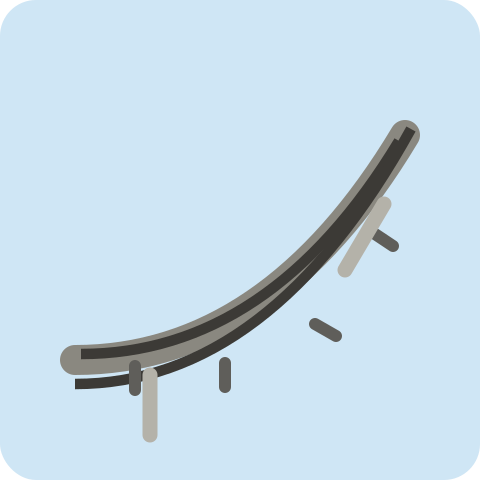
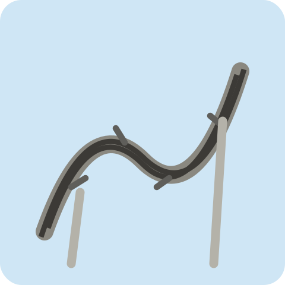
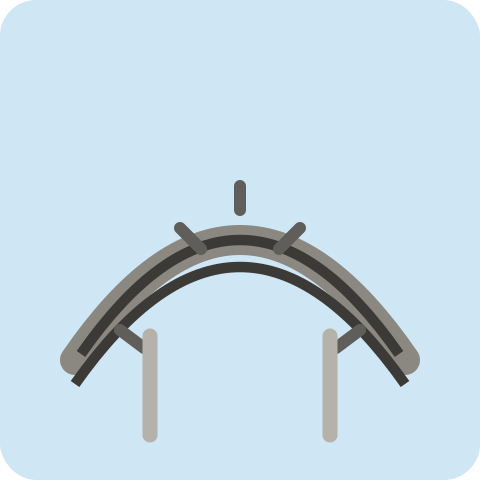
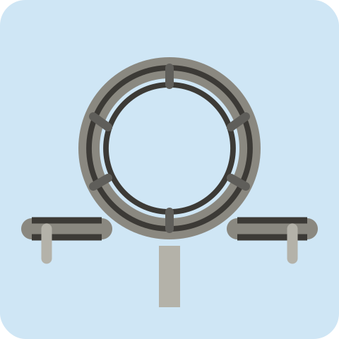
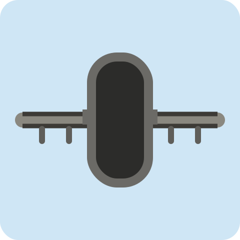
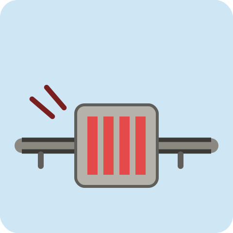
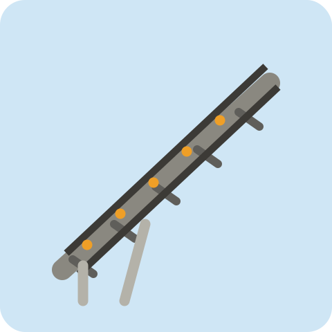
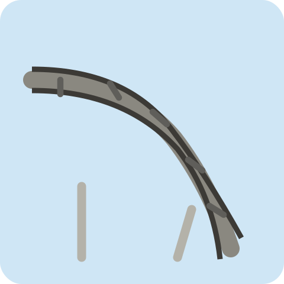

ジェットコースター設計ボードゲーム（2〜4人）
目的：2〜4人で同時にコースターを設計します。ラウンドを重ねてレールを完成させ、試運転の結果でもっとも高い合計満足度を出したプレイヤーが勝利です。
ルール設定（ロビーでホストが変更可能）：レール設置枚数（8 or 16マス、枚数に応じてラウンド数も自動で変わります）、終了時高度0ボーナスの有無、記録更新機能の有無を選べます。
ラウンドの流れ（レール設置枚数に応じて全4 or 8ラウンド）：
試運転フェイズ：全員のレールが完成したら、1人ずつ順番にスタート（高度2・速度2）からレールを走らせ、マスごとに高度・速度・スリル値を計算します。ツイスト（速度1か2）／サイクロン（速度2か3）／ループ（速度3か4）は進入速度が条件に合わないと安全装置が作動し、その回以降の満足度はその直前の値で固定されます（客層ボーナスや記録更新も、安全装置作動より前のマスだけが対象です）。
満足度計算：各マスのスリル値と客層のスリル耐性を比較し、ぴったり一致で+（スリル値＋5）、下回れば+スリル値、上回れば-2の満足度が入ります。さらに客層ごとのボーナス条件を満たすと追加の満足度が入ります（詳細は下の「獲得満足度表」を参照）。
記録更新：毎ゲーム、4種類の記録項目（最高速度記録・最高高度記録・満足度記録・落下高低差記録）からランダムに2つが選ばれます。全プレイヤーの中でその記録を最も更新したプレイヤーにボーナス満足度が入ります（同率1位が複数いる場合は全員に付与されます。設定でOFFにできます）。
終了時高度0ボーナス：設定でONの場合、試運転終了時（安全装置作動時はその直前）の高度がちょうど0だとボーナス満足度が入ります。
勝敗：各プレイヤーの客の満足度合計＋各種ボーナス満足度の合計が最も高いプレイヤーが勝利。同点の場合は、安全装置が一度も作動しなかったプレイヤーが優先されます。
ゲームが終わったら、ホストが「▶ 次のゲームへ」を押すと同じメンバーのまま新しいゲームがすぐに始まります。
巻上・落下・ブレーキ以外のすべてのマスで、通過すると速度-1します（下記の「速度」欄が実際の増減）。すべてのパーツは巻上・落下も含めて同じ山札からドラフトされます。

カーブスリル1枚数：10枚条件なし。通過すると速度-1。誰でも安心して置ける基本パーツ。

ツイストスリル2枚数：7枚進入時の速度が1か2のときだけ使用可能。成功すると速度-1。条件を満たさないと安全装置作動（スリル0・以降の満足度はこの直前の値で固定）。

サイクロンスリル3枚数：5枚進入時の速度が2か3のときだけ使用可能。成功すると速度-1。条件を満たさないと安全装置作動。

ループスリル4枚数：3枚（希少）進入時の速度が3か4のときだけ使用可能。成功すると速度-1。条件を満たさないと安全装置作動。

トンネルスリル＝進入時の速度枚数：4枚通過すると速度-1。進入した瞬間（このマスに来た時点）の速度がそのままスリル値になる。速いほど高スリル、遅いほど低スリル。安全装置の対象外。

ブレーキスリル＝下げた量枚数：4枚配置するときに「下げる量」を自分で決める。このマスに来た時点の速度からその分だけ下げる（速度が足りなければ下げられる分だけ）。下げた分がそのままスリル値になる。

巻上スリル0Lv2〜4：各6枚高度をカードのLvだけ増やし、速度を0にする。

落下スリル＝落下LvLv2〜4：各6枚高度がカードのLv（2〜4）以上あれば、その分だけ消費して同じ量だけ速度が上がる（スリル＝Lv値）。高度が足りない場合は安全装置作動（以降の満足度はこの直前の値で固定）。
毎ラウンドの配置フェイズの後、妨害カードが2枚配られます。そのうち1枚だけを選んで使用でき（使わなくても構いません）、選んだ後に効果の対象となる客層やパーツを指定します。使わなかったカードは捨てられます。
対象を1人指定する。対象は自分の客層を1人選び、その客層をランダムな新しい客層と入れ替える（入れ替える客層は対象が指定）。
対象を1人指定し、自分の客層1人と対象の客層1人を、それぞれ自分で選んで入れ替える。
対象を1人指定し、客層を1種類選ぶ。対象には今後そのタイプの客層が公開されなくなる（その回はスキップされる）。
対象を1人指定する。対象は自分のレールに設置済みのパーツを1つ選び、それを破壊する（空きマスに戻る）。破壊された対象は復旧フェイズを行う。
対象を1人指定し、自分のパーツ1つと対象のパーツ1つを、それぞれ自分で選んで入れ替える。両者とも復旧フェイズを行う。
対象を1人指定し、対象の巻上または落下パーツを1つ選ぶ。そのレベルを1下げる（Lv2はこれ以上下げられないため破壊され、復旧フェイズを行う）。
| 判定条件 | 獲得満足度 |
|---|---|
| スリル値 ＝ スリル耐性 | スリル値+5 |
| スリル値 ＜ スリル耐性 | スリル値 |
| スリル値 ＞ スリル耐性 | -2 |
| 安全装置が作動した瞬間 | +0、安全装置作動以降のレールは満足度計算されない |
| 客層 | スリル耐性 | ボーナス条件 | ボーナス満足度 |
|---|
設定はホストのみ変更できます。
招待リンクを共有して、あと1〜3人を集めてください。
ホストが次のゲームを開始するのを待っています…